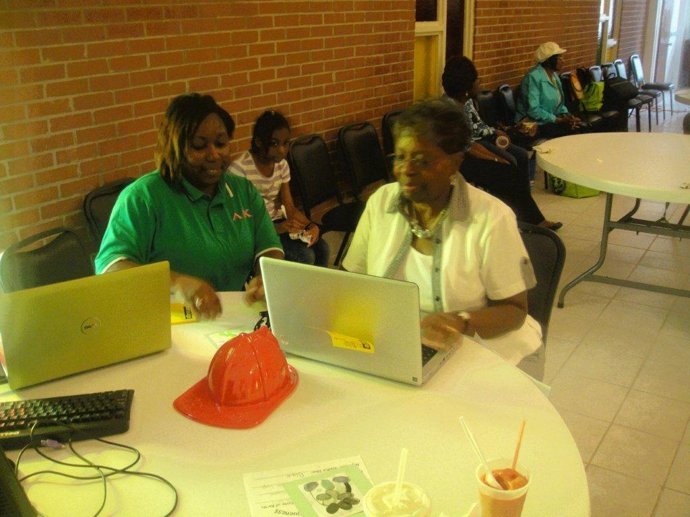

|  Dr. Williams at the outreach event. |
NSU hosted the NNSA Annual MSI Technical meeting from November 9th – 10th, 2010. This meeting was attended by twenty-three MSIs and representatives from the Hispanic College Fund and Thurgood Marshall College Fund. Several relationships were developed during this meeting and Dr. Graham was invited to Prairie View A&M University to present to Ph.D. Engineering students.
| Dr. Williams at the outreach event. |
On January 20th, 2011 project faculty and support staff visited several HBCU and MSI institutions to foster pipeline relationships and establishing feeder schools for the NSU College of Science, Engineering, and Technology (CSET) graduate programs. The following institutions were visited: